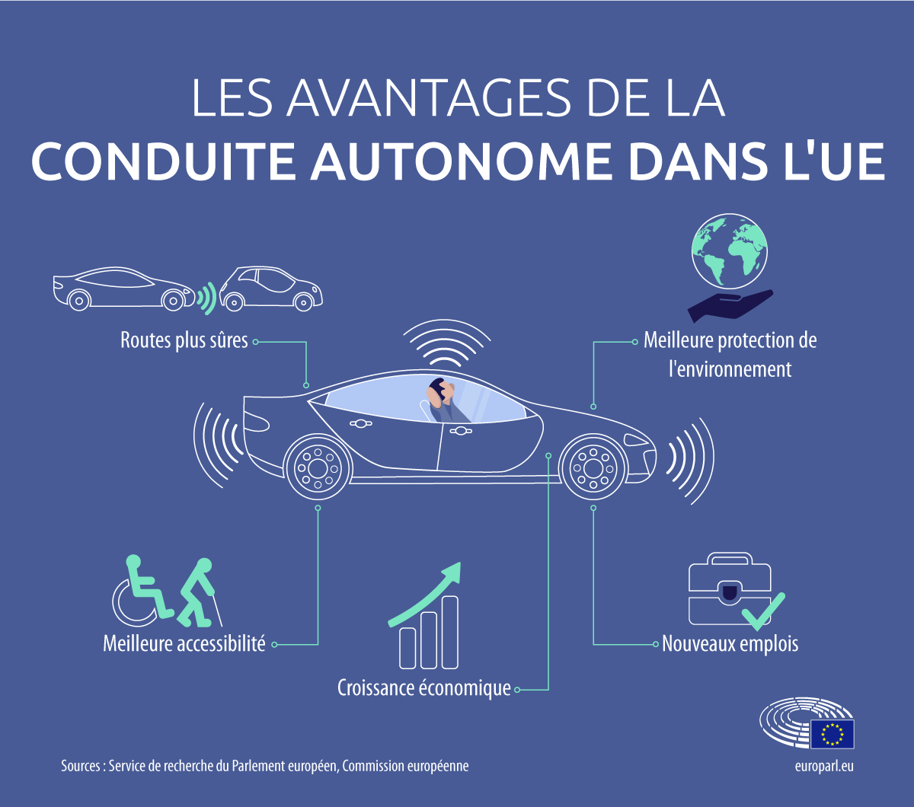
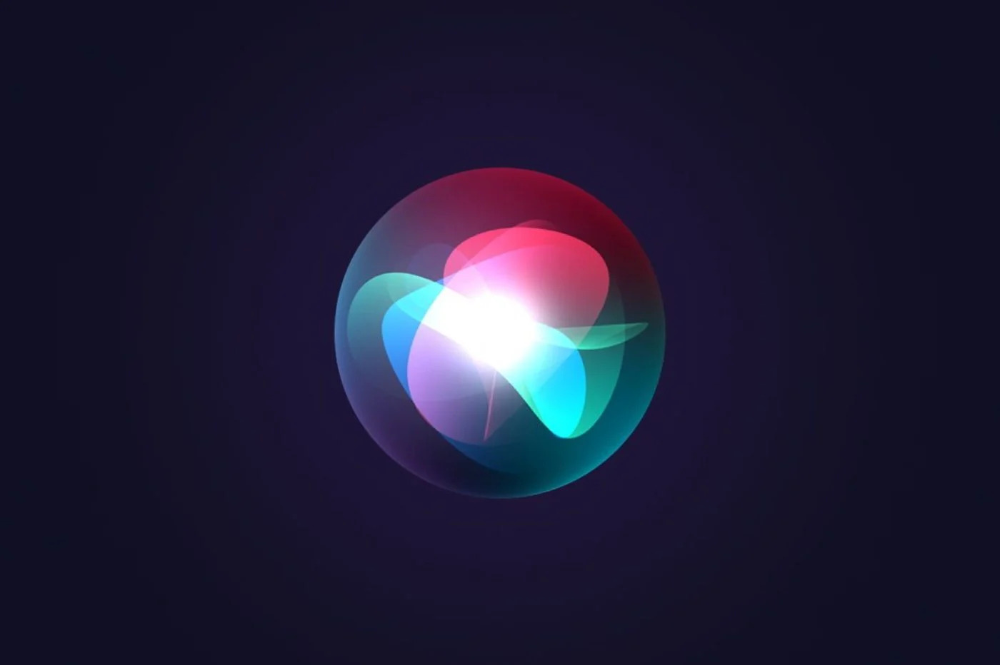

Qu'est-ce que l'IA ?
L’intelligence artificielle, ou IA, désigne l’ensemble des techniques qui permettent à des machines d’imiter certaines capacités humaines, comme apprendre, raisonner, résoudre des problèmes ou encore comprendre le langage. Contrairement aux programmes classiques, une IA peut s’adapter et s’améliorer grâce à l’expérience, en analysant des données. Elle est utilisée dans de nombreux domaines, comme la santé, les transports, l’éducation, les jeux vidéo ou encore les assistants vocaux. L’objectif de l’IA est de créer des systèmes capables d’agir de manière intelligente, parfois même sans intervention humaine directe.
A savoir
Le terme « intelligence artificielle » a été utilisé pour la première fois lors de la conférence de Dartmouth en 1956, marquant le début de la recherche en IA.
Applications concrètes
- Voitures autonomes 
- Assistants vocaux (Siri, Alexa tec) 
- Médecine assistée par IA
Quel avenir pour l’IA ?
L’IA continue de se développer rapidement. De nombreux experts estiment qu’elle transformera profondément le monde du travail, la santé, la sécurité et l’éducation dans les prochaines décennies.
En savoir plus